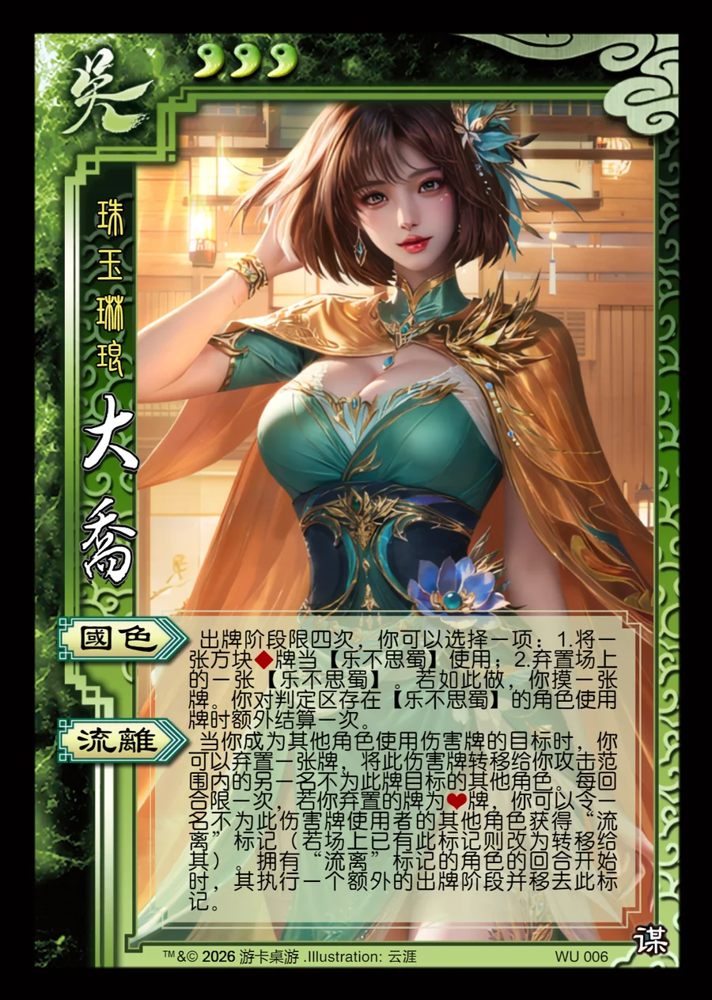

点击卡面查看大图
吴
谋大乔
♥3珠玉琳琅
国色
出牌阶段限四次，你可以选择一项：1.将一张方块♦牌当【乐不思蜀】使用；2.弃置场上的一张【乐不思蜀】。若如此做，你摸一张牌。你对判定区存在【乐不思蜀】的角色使用牌时额外结算一次。
流离
当你成为其他角色使用伤害牌的目标时，你可以弃置一张牌，将此伤害牌转移给你攻击范围内的另一名不为此牌目标的其他角色。每回合限一次，若你弃置的牌为♥牌，你可以令一名不为此伤害牌使用者的其他角色获得“流离”标记（若场上已有此标记则改为转移给其）。拥有“流离”标记的角色的回合开始时，其执行一个额外的出牌阶段并移去此标记。